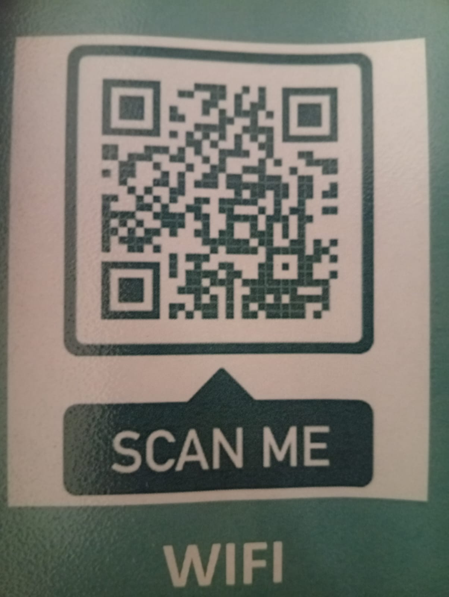
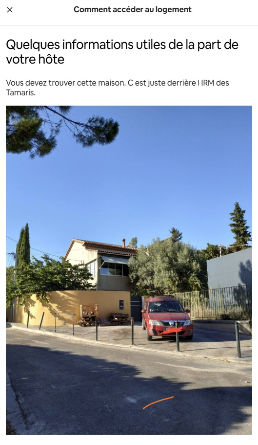
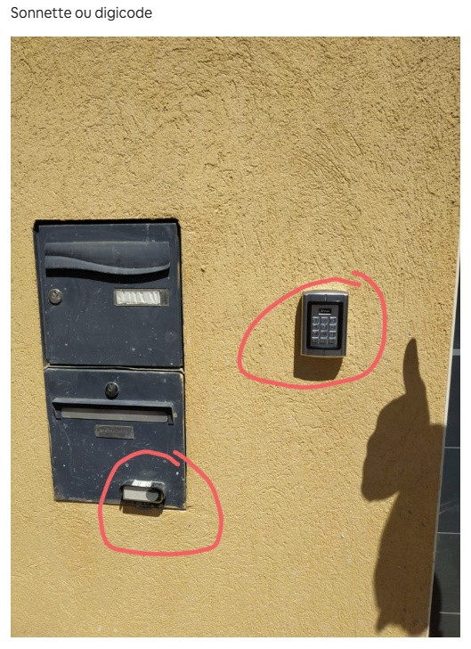
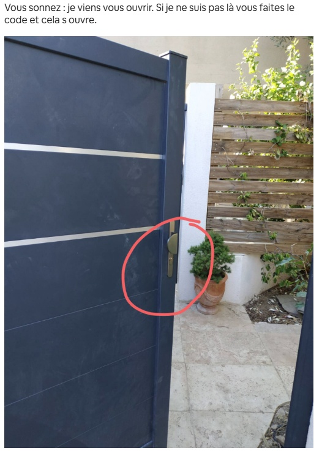
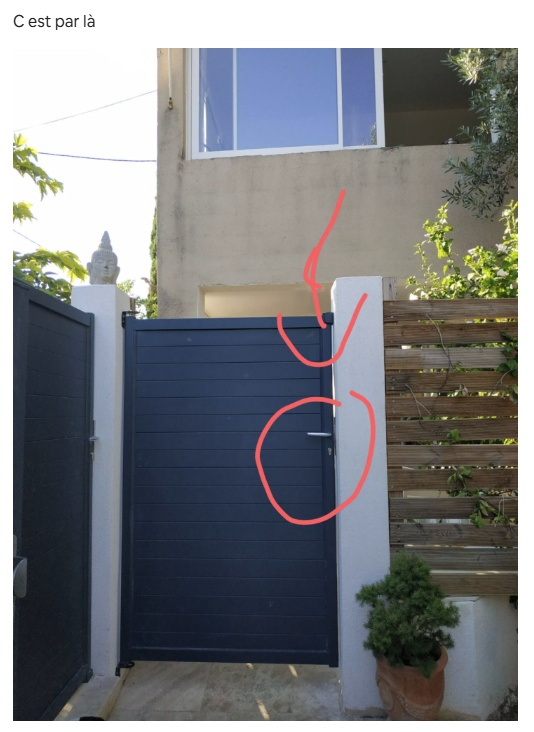
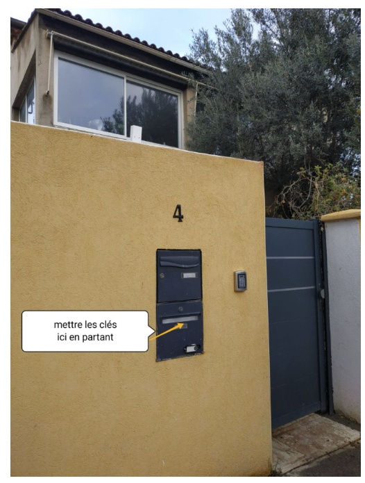

Guest Guide - Aix-en-Provence
Welcome to my home!
Thank you for choosing to stay here! This guide brings together all the essentials, house rules, and practical details to make your stay as comfortable as possible.
Address
4 Avenue des Tamaris
13100 Aix-en-Provence
Provence-Alpes-Côte d'Azur
At a glance
Essentials for your arrival
Wi-Fi
Quick connect
Network: livebox-B702
Scan this QR code with your phone's camera to automatically join the network without typing the password.

Check-in & Check-out
- Check-in: From 18:00 (6:00 PM)
- Check-out: Before 11:00 (11:00 AM)
To facilitate your arrival, please let me know your estimated time of arrival. In case of significant delay, please inform me as well.
How to access the property
The house is located near the Aix-en-Provence hospital, just past the emergency department, at the beginning of Chemin des Tamaris.
- Landmarks: It is a house with a yellow wall and a dark grey gate, located just behind the MRI building (a dark grey prefab). You will often see a red estate car (station wagon) parked in front.
- To enter: You can ring the bell so I can open the gate for you. If I am not there, you can type the code on the keypad to open it.
Contact
If you have any questions or special requests, don't hesitate to contact me. I wish you an excellent stay and remain at your disposal.
Good to know
House Manual & Rules
Please follow these few rules to be a respectful guest and avoid any issues during your stay.
Who can stay
- 👥 Capacity 12 guests maximum
- 🐾 Pets No pets allowed
House rules
- 🌙 Quiet hours 21:00 - 09:00 (9 PM - 9 AM)
- 🚭 Smoking No smoking inside
- 🎉 Events No parties or events
- 📷 Photography No commercial photography allowed
Access & Maintenance
- 🔑 Entry Self check-in (or we will welcome you personally)
- 🍽️ Dishes Please wash your dishes before leaving.
- 🗑️ Trash Please take out the trash when leaving.
Visuals
Visual Access Guide
1. The House
Yellow wall, dark grey gate, behind the MRI building.

2. Doorbell and Keypad
Ring the bell or type the code to enter.

3. Opening the gate
The handle of the grey gate is located here.

4. The entrance
This way, go through the gate to access the courtyard.

Our top spots
Outings & recommendations
A few suggestions to fully enjoy Aix-en-Provence.
Where to eat
- Sin Ky — an excellent Vietnamese restaurant.
- Da Noemi — a very popular little Italian place.
- Le Four Aixois — a safe bet for pizzas.
- Le Galifet — a beautiful spot for lunch; stunning setting and more affordable prices at noon than in the evening.
- Rue Boulegon — several very pleasant restaurants and terraces.
Have a drink
- Brasserie du Grillon (cours Mirabeau) — a true Aix institution with very reasonable prices, perfect for a drink on the terrace.
- Le Vieux Tonneau — a nice place for a drink with light snacks, mostly frequented by locals.
- Hôtel de Caumont — a drink in a particularly charming garden.
- Béchard (cours Mirabeau) — a famous pastry shop, perfect for a sweet break.
Markets (mornings)
- Marché provençal (fruits, vegetables, crafts, fabrics...) — Tuesdays, Thursdays, and Saturday mornings, place de Verdun and in several streets of the center.
- Marché de la place Richelme (food) — every morning.
- Marché aux fleurs (Flower market) — Tuesdays, Thursdays, and Saturday mornings, place de l'Hôtel de Ville.
- Marché aux vêtements (Clothing market) — Tuesdays, Thursdays, and Saturday mornings, cours Mirabeau.
We wish you an excellent stay in Aix-en-Provence!
Before you leave
Check-out procedure
Here is a quick checklist before you hit the road.
- Dishes & Trash: Please do your dishes and take out the garbage.
- Energy: Turn off lights and appliances.
- Ventilation: I would appreciate it if you could leave the bathroom window open to air out the place.
- Cleaning Info: The vacuum cleaner is located next to the fridge; cleaning products for the bathroom and the kitchen are in the top kitchen cabinet.
- Cleaning Info: Please remember to remove the bed sheets and place them on top of the washing machine.
- Cleaning Info: If you do not want to bother with cleaning or if you cannot do it (e.g., very early departure...), we offer a professional cleaning service for a fee of €40 for the duration of your stay.
- Check-out time: The apartment must be vacated by 11:00 AM, as the cleaner will arrive at this time to prepare the accommodation.
Returning the keys
Please put the keys in the lower grey mailbox located on the yellow wall in front of the house.
I hope you had a great stay. Thank you so much for your understanding and cooperation!
